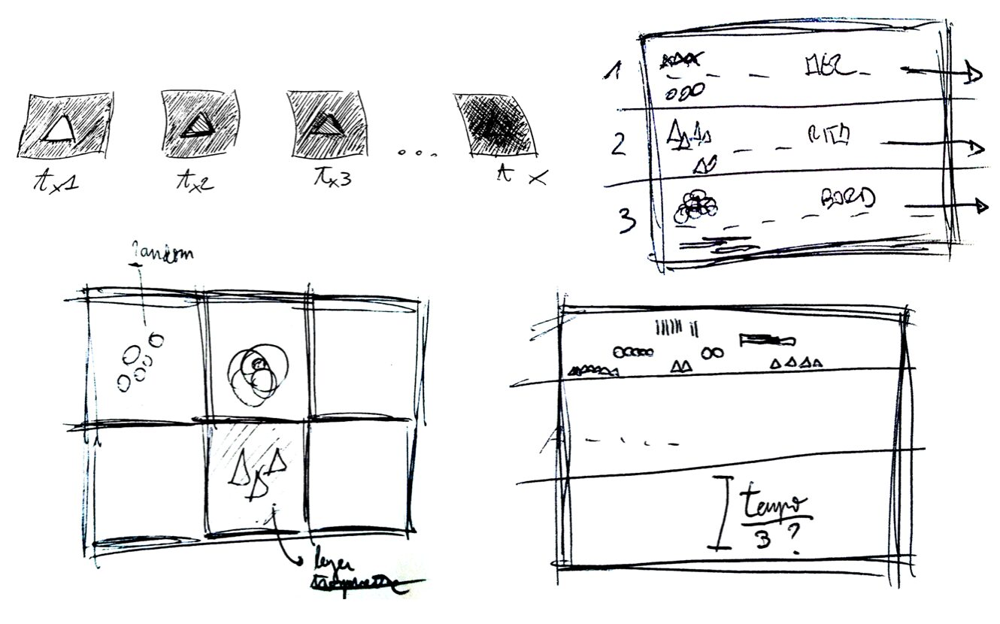
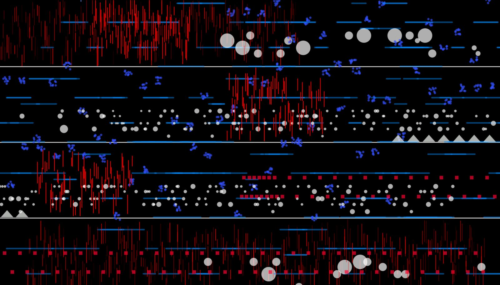
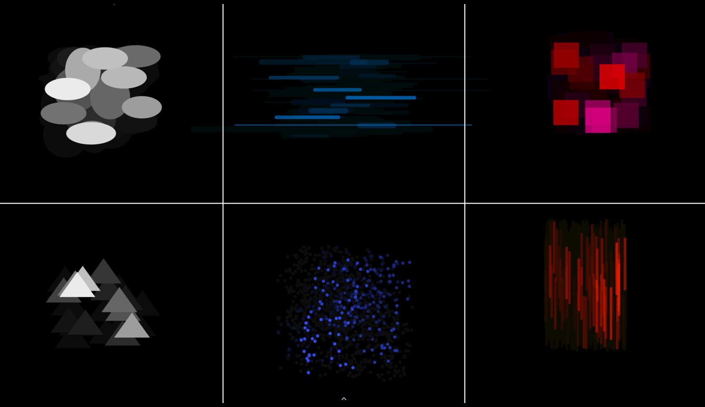
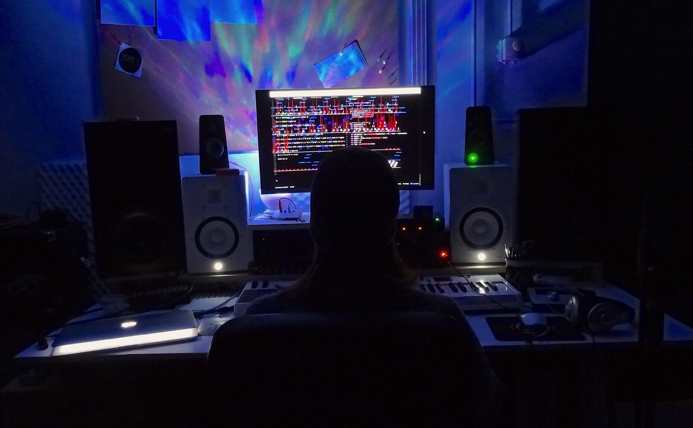

Exploring Musical Form: Digital Scores to Support Live Coding Practice
Abstract
The management of the musical structures and the awareness of the performer’s processes during a performance are two important aspects of live coding improvisations. To support these aspects, we developed and evaluated two systems, Time_X and Time_Z, for visualizing the musical form during live coding. Time_X allows visualizing an entire performance, while Time_Z provides a detailed overview of the last improvised musical events. Following an autobiographical approach, the two systems have been used in five sessions by the first author of this paper, who created a diary about the experience. These diaries have been analyzed to understand the two systems individually and compare them. We finally discuss the main benefits related to the practical use of these systems, and possible use scenarios.
Author Keywords
Live Coding, Visualization, Music Form, Graphic Scores
CCS Concepts
•Applied computing → Sound and music computing; Performing arts;
Introduction
Live coding is a performative practice mainly characterized by free improvisation [1]. As such, structuring the musical form can be complicated to cope with during a performance.
This project arises from a practical need of the first author, interested in exploring strategies to better manage the structure of his performances. However, the issue of the musical form is generally overlooked in live coding literature.
As live visuals have already successful support the understanding of specific musical elements [2][3], we developed two systems (Time_X and Time_Z), which generate graphical scores in real-time and visualize the evolving musical structures of a live coding improvisation. These systems aim at facilitating the management of the musical form and the awareness of the processes during an improvisation.
The systems have then been evaluated by the first author of this paper, using an autobiographical approach [4], during ten days of testing. Subsequent comments to these sessions have been analyzed using thematic analysis [5]. In the final part of this paper, we will highlight affinities and differences between the two systems as emerged from the analysis, discuss possible use contexts, and propose some general reflections on the topic.
Background
Live coding as improvisation
Live coding performances are characterized by improvisation. While discussing the lack of pre-packaged structures in live coding improvisation, Parkinson and Bell [1] proposed an analogy with free, non-idiomatic improvisation, a term introduced by Derek Bailey in the context of his instrumental practice [6]. Live coders typically embrace the “from-scratch” challenge: the structures of their pieces take shape in real-time, originate from a blank page, and the code is not even saved at the end of the performance [7]. To define this approach, Magnusson has used the lemma strong coding, as opposed to weak coding, when the code is written in advance and simply executed or slightly modified during the performance [8]. Magnusson also suggested that the practice of live coding shares similarities with oral tradition and tends to be primarily extemporaneous [9]. Therefore, an in-depth study on the structural organization of the sonic material and the musical form of the pieces is generally overlooked; as he pointed out:
"We do not study each other's pieces" [9].
The practice of live coding has some very specific characteristics which contribute to increasing the difficulty of performance. Firstly, musical ideas can’t be implemented immediately, as it takes time to write them in the form of code (idea-to-code latency [10]). Indeed, live coders make improvisational choices based on a need for the “now” but elaborate on them in the future [10]. Furthermore, live coding improvisations are error-prone, a risk that increases with the complexity of the code [11]. Finally, it has been argued that two interaction feedback loops (manipulation feedback and performance feedback) coexist during a live coding set increasing the cognitive overload of the performer [12].
Overall, some live coders have stated that they are rarely able to develop new ideas while performing, and therefore tend to recycle similar patterns and structures well assimilated into memory [13].
Scores and representation in Digital Musical Instruments
An overview of how the scores have been used in the NIME conference has been recently proposed by Masu and colleagues [14]. By systematically analyzing the proceedings of the conference the authors identify five main uses of scores: 1) Scores as Instructions (suggesting how to play an instrument [15]), Scores as an Interface to Play a DMI (score as a controller that can be tangible [16], virtual [17], or in form of code with a graphic visualization [18]); 3) Score as synchronization (the system uses a score to synchronize various events [19]) 4) Scores creation (tools that support the creation of instrumental scores [20]); and 5) Scores recording (score as a recording of performative actions [21]). In the electronic repertoire, scores have been also used to visualize tape music [22]. In these cases, the score has the function of a post-hoc study with a musicological approach.
In this taxonomy, live coding would fit in the category of Scores as an Interface where the code (a form of notation) is the input of the digital system that is created or manipulated during a performance. A relevant reflection on live coding as a score is offered by Magnusson, who highlighted that Live coding has the peculiarity of transforming the compositional process and the creation of the score itself into a live performative event [23]. A live coding score usually takes the form of textual code; however, abstract graphic forms of notation can also be used [24][25].
Visual support in live coding practice
One of the most frequent criticisms of laptop music is the lack of visual feedback in the performative context. Different visualization solutions to cope with this issue have been proposed [26], from the point of view of the structure of the musical piece [27], the performer [28], and the audience [29].
The practice of live coding is in an advantageous position compared to other laptop music practices, as the visualization of the code exposes information about the performance by itself. The code therefore can be considered as an archetype of visualization of formal processes [23]. However, as evidenced by Collins, the mere visualization of the code might not be sufficient to fully understand all the processes [30]. Additionally, the code on the screen may not represent the piece as a whole, as much as a cross-section of it, a small part [30].
This issue has been addressed through the implementation of visualization systems to replace or complement the coding part and support the understanding of specific musical elements. Some of them constitute new programming environments (e.g., [31][32]), while others rely on existing systems. These are support systems hierarchically subordinate to the sound component, whose primary purpose is to visualize some aspects of the musical creation. A relevant example is Magnusson's Threnoscope, whose visualization consists of a series of concentric circles each representing a drone and its parameters [2]. Abreu proposed another system, the Didactic Pattern Visualizer, which allows the visualization of sound events sequenced from the TidalCycles1 library, arranged on a temporal grid [3]. The different choice of temporal representation between the two systems has a functional motivation, which derives from specific musical needs. However, in both cases, the entire form of the piece is not visible, and the two systems do not offer an entire score of the piece. In presenting their systems both authors use terms such as “helpful” and “didactic”, to underline the function of visual support for the processes understanding. In relation to this terminology, Purcell and colleagues used similar lemmas to classify two types of visuals in a live coding performance: didactic, a visualization designed to convey information through simple graphic objects, and aesthetic, a more abstract and immersive visualization that prefers visual appeal and pleasure [33].
Two visualization systems
We have seen how visualizing specific musical elements can be fruitful in live coding [2][3]. Therefore, we decided to use live visuals with the objective of facilitating the management of the musical form and the awareness of the processes of the performer during the improvisation.
To this end, by adopting a didactic approach [33], we propose two visualization systems that create a score in real-time. The visualization systems complement a strong coding approach [8] as no prior structures that determine the musical form are used, and therefore this element can be completely improvised in real-time.
The starting point
The two visualization systems have been designed and implemented starting from the live coding system implemented and used by the first author, based on TidalCycles and SuperCollider 2.
This live coding system comprises a number of sound generator engines. We classified the sound events that the system is capable to produce into six categories, according to their sonic characteristics and the way they are normally used in the performances (by the first author). In order to differentiate among the categories, we assigned a specific graphic object to each audio category. As much as possible we used shapes that recall the audio features (e.g. particles for clouds, horizontal lines for strips, vertical lines for glitches); when a clear metaphoric representation was not possible, we aimed to have shapes different enough to facilitate discrimination. Through the use of colors, we have further grouped the six categories based on the function they normally have in the improvisations, in order to facilitate the recognition (table 1).
Category | Description | Functions | Shapes | Color |
Melodies | Short, harmonic, synthetic | Foreground melodic | Ellipses | Yellow |
Blops | Short, inharmonic, synthetic | Foreground melodic | Triangles | Yellow |
Strips | Long, harmonic, synthetic | Background drones | Horizontal lines | Blue |
Clouds | Long, granular groups | Background drones | Particles | Blue |
Elements | Natural samples | Rhythmic patterns | Rectangles | Red |
Glitches | Electromagnetic samples | Rhythmic patterns | Vertical lines | Red |
The two systems: design and implementation
Once defined the graphic objects, we developed two independent visualization systems based on different representations of time: Time_X and Time_Z (the first sketches are visible in image 1).


First sketches on paper.
Time_X
Time_X is based on a standardized music representation of time, as we can encounter in a classic western score (image 2). The individual events are temporally arranged from left to right on the canvas following the increment in time of a moving pointer. To increase the granularity of the time visualization, we divided the entire screen into horizontal areas (referred to herein as staves): once the space in the first stave is ended, the system starts to notate the events in the following from top to bottom. The pointer speed is determined by the duration of the whole set and by the number of staves, both of which need to be set at the beginning of the performance. Therefore, the structure of the entire piece will be visible on the resulting score at the end of the performance.


An example of the “Time_X” approach.
Time_Z
In Time_Z the graphic objects are arranged along an imaginary Z-axis, overlapping each other. We decided to arrange the six different objects into six separate areas of the canvas. Additionally, we also added a little random in the displacement of these objects in the dedicated square (image 3). This random would spread the object over the area of the squares, minimizing possible reading issues caused by the overlapping. To convey the idea of the passage of time, a dark layer with low transparency (alpha channel = 1) has been added at a slow framerate. In this way, the less recent graphic objects gradually disappear. By default, each object disappears after 50 seconds approximately. Consequently, with this system, it is not possible to graphically visualize the entire performance.


An example of the “Time_Z” approach.
To implement both prototypes we used the atom.p5.js3 library, which allows running p5.js4 sketches directly in Atom5. Therefore, the window of the text editor became an actual canvas on which the graphic objects and the code are displayed as two different layers.
We added a second OSC out port to the TidalCycles’ boot file. Therefore, the library simultaneously sends the same messages to both SuperCollider and atom.p5.js, synchronizing audio and video events. The two visualization systems share the same block of code for receiving and parsing these OSC messages. On the contrary, as detailed in the previous paragraphs, the objects displacements are different, resulting in a different parameter mapping between all the audio parameters and graphic parameters (table 2).
Category | Audio Parameters | X Graphic Parameters | Z Graphic Parameters | Scaling |
Melodies |
|
|
|
|
Blops |
|
|
|
|
Strips |
|
|
|
|
Clouds |
|
|
|
|
Elements |
|
|
|
|
Glitches |
|
|
|
|
Evaluation
Methodology
The two systems proposed have been evaluated by the first author of this paper, using an autobiographical approach [4]. Autobiographical design is “design research drawing on extensive, genuine usage by those creating or building a system” [4]. Autobiographical design has been recently successfully used field of music technology design [34][35][36], and is particularly appropriate in this study, as the issue tackled here is intertwined with the first author's practice.
In order to properly test the two visualization approaches, the first author evaluated the system in a situation similar to his typical live coding rehearsals (image 4). For each system, he performed five improvised sessions of 20 minutes, one per day. All these sessions have been audio-video recorded. After each improvisation the first author watched these recordings (post-task walkthrough [37]), commenting on what he just did (think-aloud [38]). This process allowed him to spontaneously bring out some considerations related to the management of the musical form and his relationship with the two visualization systems.
The think-aloud recordings were recorded and transcribed to create two diaries (one for each approach), which have been analyzed using thematic analysis [5]. The diaries have been independently coded, and these codes were recursively clustered to obtain themes and sub-themes. Finally, in order to facilitate the comparison between the two approaches, the names of themes and sub-themes have been harmonized. The two authors double-checked the coding and clustering processes.


A session with Time_X
Results
In this chapter, we present the results of the thematic analysis of the diaries. For each representation system, seven themes (in bold) emerged, along with several subthemes (in italic). Quotes from the diaries are reported between quotation marks.
By observing the analysis of the two approaches, we realized that the various themes are related to 1) different actions/relationships for each system that comprise elements that either support perception or stimulus to determine action strategies; and 2) intrinsic characteristics of the systems themselves, that are advantaged and limitations intrinsic to that specific system, the learning curve, and possible improvements.
Time_X
Actions/Relationships
Listening support. Time_X has proven particularly effective as an aid to auditory memory. This approach supported remembering the structure. Indeed, the possibility of viewing the structures of what was previously performed and the temporal evolution proved to be particularly useful for recalling some performative choices that resulted from trial and error, or by listening to the system's response and acting accordingly. Visually retracing what has been played facilitated remembering the development of musical structures, especially when emerged from random explorations. Additionally, it emerged that this approach also proved effective for a fast understanding of small changes in audio parameters: “By ear, I didn't immediately realize that [patterns] are slowly degrading. […] By seeing the representation the process is evident”.
Time understanding. It emerged that spatial visualization is a more effective time indicator than a generic clock, as allows the performer to graphically see the lengths of the various patterns/cycles. Furthermore, the temporal visualization was useful both to understand the current positioning in the time span of the set, and to support operational choices. These choices mainly refer to planning the remaining time: “It also helped to first elaborate a hypothesis of what I wanted, [...] already starting to reflect on future processes”.
Strategies for musical formal development. The possibility to visualize the overall musical structures suggested different development strategies. In particular, reprise and variation techniques have emerged: “I started to vary the pattern, scattering the current and previous melody and rhythm”. Painting emerged as another strategy. In some situations, choices were dictated by graphical ideas suggested by the visualization system. These ideas were operationalized by “painting” geometries (horizontal versus vertical lines) or colors on the canvas rather than aiming at musical results. This strategy led to the emergence of some musical solutions that "normally I would not have thought of”.
Intrinsic characteristics
Performative advantages. The use of this approach promoted more awareness and planning of musical structures compared to a usual performance, which emerged many times: “There seems to be more space between events. Actually, it's because I feel like I'm thinking more”.
Limitations. Two main limitations emerged. First, the pieces were less articulated than usual. The presence of a visual component that displays the entire development of the piece led to a tendency to focus more on the musical structure. Despite this being a positive feature overall, it also limited the improvisation as it “forced me to stick to much simpler structures”. Therefore, the musical result has been “generally poorer than usual”, mainly because “without visual support [...] I tended to write more code without worrying too much [about global development], which perhaps resulted in a more varied performance”. Second, it also emerged that in some circumstances the overall density of the graphic objects was perceived as high: consequently, a detailed structural understanding was difficult. This issue has been temporarily addressed by using less dense events displacement, but it also partly conditioned the natural development of musical ideas.
Learning curve. Some initial difficulties in using Time_X have emerged, mainly because of the instinct to continually consult the visual part, which “distracts me [...] and I am less focused on the code”. In the last two days of testing, the use of this approach had become more natural, which suggests that this difficulty can be overcome with practice and development of habits.
Possible improvements. It emerged that particular use of concrete samples can be emphasized by inserting further graphic categories: “Visualizing more clearly which samples I was using […] might have been convenient”.
Time_Z
Actions/Relationships
Listening support. It emerged that this approach supports the hearing in terms of understanding what is happening in real-time. Although pieces of information can be grasped directly from the audio or the code itself, “the visual component is useful for better discerning the various ideas”, especially in situations where “it is difficult to follow the distribution [of specific events] by ear”. By seeing them, however, “I immediately understood what was happening”. The visual part is therefore “useful for managing the events on the fly and arranging them accordingly”.
Time understanding. Although only the last 50 seconds can be viewed on the screen, it emerged that “compared to the usual settings, the structural parts [of the piece] are generally more harmonious in terms of duration ratios”.
Strategies for musical formal development. A variety of music development techniques have been used during the test performances. Specifically, in some situations, the sound material has been treated through rarefaction and thickening processes. It also emerged that the main focus was on the variety of graphical representations of sounds: “I began to think in terms of variety of the signs, rather than in actual audio parametric terms”. The need for variation was mainly dictated by visual stimuli: “I didn't have a precise musical idea in mind, […] I just wanted to wave the graphic result”. Similarly, the choice of sound materials has often been motivated by the desire to fill specific spaces on the canvas. The particular arrangement of the graphic objects divided by category, in fact, led to an initial tendency to “fill the various spaces […] even when not musically required”. In the last two days of testing, an opposite trend has emerged: “[I used] more dilated patterns and to focus on a few types of sounds”. Finally, the diaries highlighted some phases of the improvisations in which the musical development was based on “microstructures, with relatively short duration, relating to a single sound typology”, leaving the others unchanged.
Intrinsic characteristics
Performative advantages. The diaries revealed how this approach was quite natural, facilitating to “recover a live coding aptitude similar to the one I'm used to”. This approach also relieved the sense of continuous repetition of patterns thanks to the implementation of the random point of origin of each of the six areas of the canvas. This implies an ever-changing arrangement of the graphic objects, which “allows me to calmly manage musical development”. Finally, its usage has been mainly focused on obtaining information on individual/little groups of sound events and their characteristics. Indeed, Time_Z provides good details over the real-time and the temporally nearest events: “I can easily realize the fullness of the sound space and better understand its variety thanks to the shades of color”.
Limitations. This approach is not supportive in managing the overall development of the piece. In some situations, “a certain discomfort” emerged that “it seemed to me that my performance wasn’t going anywhere”. Although this resulted in musical results defined as “more pleasant” and “akin to my musical aesthetic”, the focus has always been “on the closest moments in time”, there was a lack of awareness about the overall musical structure.
Learning curve. No particular difficulties emerged in the use of the system that required an initial familiarization with it.
Possible improvements. The main problems that emerged in this visualization approach are related to the glitches (the sixth category of sounds), as on some occasions their overlapping “becomes so high that it makes the visualization almost useless”. Furthermore, compared to the other categories, not all the glitches parameters are easily visible, e.g. the type of sample, or their speed. However, these problems derive from a peculiar use of the glitches as a rhythmic structure, by inserting a large number of samples.
Confronting the two approaches
In this subsection, we present a brief comparison between the results of the thematic analysis of the two visualization approaches (Time_X and Time_Z). First, it emerged that both approaches have contributed to increasing the awareness of musical structures, helping to better understand the processes and ideas during the sets. Additionally, in both cases, it emerged that the act of writing the code proceeded at a slower and more reasoned pace. Nevertheless, there are some substantial differences, here discussed theme by theme.
Action / relationship.
Listening support. Time_X proved to be effective in remembering the structure of the piece in terms of the geometric arrangement of the patterns and of the overall musical form. Instead, by using Time_Z it was possible to obtain greater detail on single sound events or groups of events, at the expense of the overall structure of the piece.
Time understanding. The ability to graphically view the duration of the various patterns in Time_X was useful for better managing the remaining time of the set. This element led to more precise and effective development choices, especially in the concluding parts of the improvisations. The use of Time_Z has however still supported the improvisation of pieces with quite organic sections in terms of duration.
Strategies for formal musical development. The two systems suggested different musical development strategies. In the case of Time_X, the focus was mainly oriented on the creation of well-defined global sections, differentiated through reprises and variations of the musical structures already proposed. In Time_Z, the musical processes implemented during the improvisation were mostly independent and referred to individual sound categories and local events. In both cases, some ideas were directly suggested by the visual component, implying the adoption of strategies that aimed at drawing specific shapes/geometries, rather than motivated by musical needs.
Intrinsic characteristics
Performative advantages. Time_X resulted in greater confidence in the formal development of the piece, making it possible to effectively plan the musical structures and helping to increase awareness of the choices. Time_Z instead favored an improvisation perceived as more natural, as the continuous evolution of the arrangement of the shapes on the canvas has sweetened the perception of repetitiveness, allowing the performer to make his choices more freely.
Limitations. In the first system, it emerged that the improvisations were formally more structured with more elegant reprises and parallelisms, but tended to be poor from the point of view of the musical complexity of the individual events, resulting in less interesting pieces overall. On the contrary, with the second system, the pieces were more interesting and generally pleasant, but with a less clear structure and overall linear in terms of development (where the new musical material is based only on what just happened without any structural link).
In both cases, some problems related to the density of graphical objects have emerged: in the first case, there were specific moments in which the entire visualization became difficult to consult, while in the second case, the glitches were the only element that provoke this specific issue.
Learning curves. Time_X proved to be more difficult to use than Time_Z and required an initial familiarization with it.
Possible improvements. In both cases, it emerged that some situations/sound categories could have required more categories and related parameter mapping. Specifically, this need arose from specific structural uses of specific sounds, most of the time as a rhythmic structure.
Discussion
Main results and possible use scenarios
Overall, Time_X proved to be useful in understanding the overall form and creating structural parallelisms of the musical material, facilitating a more aware control over the entire form. However, focusing on this element required quite some attention, which was removed from the local development of the material, creating a poorer piece. On the contrary, Time_Z facilitated the development of interesting processes for modifying musical material locally but did not support the understanding of the global form.
Based on these differences, we suggest specific uses for the two systems. In particular, Time_X could be effectively used in preparation for a performance, to explore possible musical structures based on the time available (that is usually determined by the context, festival, conference, etc). Additionally, using Time_X, it is possible to visualize the entire form of the improvisations created during the rehearsal. This can help to formulate new ideas on how to shape the form that can be used in successive performances. In this sense, following the taxonomy by Masu et al. [14], Time_X can be seen as a scores recording system, where the recording can be used for future improvements. We can even speculate that Time_X can be seen as a scores creation system, whose scores would not be played by instrumentalists (as in the other papers of this category identified in [14]), rather can have a musicological value. Despite this was not its primary objective, Time_X could also be used as graphic scores of electronic repertoire for musicological purposes (as in [22]).
Time_Z, on the other hand, sees its optimal use in daily practice, favoring the development of new procedural automatism and new strategies for organizing sound material. This can be particularly useful in light of the fact that, as pointed out by McLean and Wiggins, some live coders rarely develop new ideas during the performances [13]. Finally, this second system is relatively more similar to the other existing system that used a didactic approach to visualize live coding, using the terminology by Purcell [33], such as the Threnoscope by Magnusson [2] and the Didactic Pattern Visualizer by Abreu [3].
Overall, the two systems can facilitate the live coder to manage the musical structure of her/his improvisations with more awareness, and this could contribute to mitigating some of the intrinsic issues related to the practice (as in [10][11][12]).
On the musical form: should we study (our) pieces?
We have seen how live coding has a strong improvisational component [7][8]. Our systems do not oppose this tendency, as can be used in strong coding improvisations [8]. At the same time, they help the performer to structure the music material. In general, as we have seen in the previous subsection, both approaches probably find their best use scenarios in rehearsals conditions. As such, these systems promote an approach where the previous rehearsals are at least partially studied as part of the practice. Especially, Time_X grants the possibility to recall the entire pieces afterward. From this perspective, our systems also oppose the tendency of free improvisation [1], as poses the focus on structuring the musical process. This is in line with the personal needs of the first author as a live coder, but we argue that it could be used to challenge the practice in general. Paraphrasing Magnusson [9], we propose the following provocative question: should we study (our) pieces?
In our view, the answer to this question should be yes, as this can contribute to deepening and developing musical ideas with the focus on the artistic outcome itself, rather than on the technological apparatus. We suggest that analyzing live coding pieces, not merely each others, but also our own, can be useful for better awareness in the development of the musical form. Therefore the aim is to develop critical and analytical thinking on the strategy used to build musical meaning through the musical form of the pieces.
Conclusions
In this paper, we proposed two systems to start addressing the issue of musical form in the live coding practice. These two systems represent two approaches: one helps to observe the form of the improvisation in its entirety and allows for post-performance reanalyses, the second favored the development of automatisms. The approaches can complement each other and represents a starting point for future research and possible strategies to address the musical form in live coding practice.
Acknowledgments
We would like to thank Fabio Cifariello Ciardi, Andrea Bertagnolli, and the TOPLAP Italia community for their help and support.
The second author acknowledges ARDITI - Agencia Regional para o Desen-
volvimento e Tecnologia under the scope of the Project M1420-
09-5369-FSE-000002 - PhD Studentship and acknowledges the sup-
port of LARSyS to this research (Projeto - UIDB/50009/2020).
Ethics Statement
We acknowledge that this work is grounded on western concepts, such as form, structure, and score. We do not wish to claim that this is the only valid approach to studying NIMEs and live coding, but this is our perspective. All the authors of this manuscript have an academic background in western music composition and a personal background rooted in western culture, and this is the perspective from which we see the world. We believe that we can offer the best contribution to the community by reflecting on the lineage of our own traditions, bringing this to the current debate.
To facilitate accessibility and inclusion, the systems presented in this paper have been developed using FLOSS, and will be release in creative common.
To reduce the carbon footprint of our collaboration, following the suggestions in the NIME Eco Wiky [39], we collaborated on this project mainly using self-hosted web conference services with a minimal video resolution, or simply via online phone calls.
Footnotes
Citations
- ↩Parkinson, A., & Bell, R. (2015). Deadmau5, Derek Bailey, and the laptop instrument–Improvisation, composition, and liveness in live coding.
- ↩Magnusson, T. (2014). Improvising with the Threnoscope: Integrating Code, Hardware, GUI, Network, and Graphic Scores. NIME, 19–22.
- ↩
- ↩Neustaedter, C., & Sengers, P. (2012). Autobiographical design in HCI research: designing and learning through use-it-yourself. Proceedings of the Designing Interactive Systems Conference, 514–523.
- ↩Braun, V., & Clarke, V. (2006). Using thematic analysis in psychology. Qualitative Research in Psychology, 3(2), 77–101.
- ↩Parkinson, A., & Bell, R. (2015). Deadmau5, Derek Bailey, and the laptop instrument–Improvisation, composition, and liveness in live coding.
- ↩Bailey, D. (1975). Improvisation. Ampersand.
- ↩Magnusson, T. (2015). Code scores in live coding practice. Proceedings of the International Conference for Technologies for Music Notation and Representation, Paris, 5.
- ↩Magnusson, T. (2014). Herding cats: Observing live coding in the wild. Computer Music Journal, 38(1), 8–16.
Thor Magnusnon, presentation at New Notation Symposium, IRCAM, Paris, September 2016.
Presentation available at: https://www.youtube.com/watch?v=XCvcbi4XRsg&t=264s
↩Thor Magnusnon, presentation at New Notation Symposium, IRCAM, Paris, September 2016.
Presentation available at: https://www.youtube.com/watch?v=XCvcbi4XRsg&t=264s
↩- ↩McLean, A., & Wiggins, G. (2009). Patterns of movement in live languages.
- ↩McLean, A., & Wiggins, G. (2009). Patterns of movement in live languages.
- ↩Blackwell, A. F., & Collins, N. (2005). The Programming Language as a Musical Instrument. PPIG, 11.
- ↩Nash, C., & Blackwell, A. F. (2011). Tracking virtuosity and flow in computer music. ICMC.
- ↩McLean, A., & Wiggins, G. A. (2010). Live Coding Towards Computational Creativity. ICCC, 175–179.
- ↩Masu, R., Correia, N. N., & Romao, T. (2021, June). NIME Scores: a Systematic Review of How Scores Have Shaped Performance Ecologies in NIME. Proceedings of the International Conference on New Interfaces for Musical Expression. https://doi.org/10.21428/92fbeb44.3ffad95a
Hamano, T., Rutkowski, T. M., Terasawa, H., Okanoya, K., & Furukawa, K. (2013). Generating an Integrated Musical Expression with a Brain-Computer Interface. In NIME (pp. 49–54).
↩Tomás, Enrique, & Kaltenbrunner, Martin. (2014). Tangible Scores: Shaping the Inherent Instrument Score. In Proceedings of the International Conference on New Interfaces for Musical Expression (pp. 609–614). London, United Kingdom: Zenodo. http://doi.org/10.5281/zenodo.1178953
↩- ↩Masu, R., Bala, P., Ahmad, M., Correia, N. N., Nisi, V., Nunes, N., & Romão, T. (2020). VR Open Scores: Scores as Inspiration for VR Scenarios. In R. Michon & F. Schroeder (Eds.), Proceedings of the International Conference on New Interfaces for Musical Expression (pp. 109–114). Birmingham City University. https://doi.org/10.5281/zenodo.4813262
Thor Magnusson. (2014). Improvising with the Threnoscope: Integrating Code, Hardware, GUI, Network, and Graphic Scores. Proceedings of NIME 2014. http://doi.org/10.5281/zenodo.437688
↩Orio, Nicola, Lemouton, Serge, & Schwarz, Diemo. (2003). Score Following: State of the Art and New Developments. In Proceedings of the International Conference on New Interfaces for Musical Expression (pp. 36–41). Montreal, Canada: Zenodo. http://doi.org/10.5281/zenodo.1176547
↩Garcia, Jérémie, Tsandilas, Theophanis, Agon, Carlos, & Mackay, Wendy E. (2011). InkSplorer : Exploring Musical Ideas on Paper and Computer. In Proceedings of the International Conference on New Interfaces for Musical Expression (pp. 361–366). Oslo, Norway: Zenodo. http://doi.org/10.5281/zenodo.1178027
↩Liang, Beici, Fazekas, György, McPherson, Andrew, & Sandler, Mark. (2017). Piano Pedaller: A Measurement System for Classification and Visualisation of Piano Pedalling Techniques. In Proceedings of the International Conference on New Interfaces for Musical Expression (pp. 325–329). Copenhagen, Denmark: Zenodo. http://doi.org/10.5281/zenodo.1176268
↩- ↩Adhitya, S., & Kuuskankare, M. (2012). Composing graphic scores and sonifying visual music with the SUM tool. Proceedings of the 9th Sound and Music Computing Conference (SMC 2012). Copenhagen, Denmark, 171–176.
- ↩Magnusson, T. (2011). Algorithms as Scores: Coding Live Music. Leonardo Music Journal, 21, 19–23. https://doi.org/10.1162/LMJ_a_00056
- ↩Magnusson, T. (2014). Improvising with the Threnoscope: Integrating Code, Hardware, GUI, Network, and Graphic Scores. Proceedings of the International Conference on New Interfaces for Musical Expression, 19–22. https://doi.org/10.5281/zenodo.1178857
- ↩Magnusson, T. (2015). Code scores in live coding practice. Proceedings of the International Conference for Technologies for Music Notation and Representation, Paris, 5.
- ↩Chan, W., & Qu, H. (2007). A report on musical structure visualization. Leonardo, Department of Computer Science and Engineering Hong Kong University of Science and Technology Clear Water Bay, Kowloon, Hong Kong.
- ↩Hunt, S., Mitchell, T., & Nash, C. (2017). How can music visualisation techniques reveal different perspectives on musical structure. International Conference on Technologies for Music Notation and Representation.
- ↩Joaquim, V., & Barbosa, Á. (2013). Are Luminous Devices Helping Musicians to Produce Better Aural Results, or Just Helping Audiences Not To Get Bored?
- ↩Correia, N. N., Castro, D., & Tanaka, A. (2017). The role of live visuals in audience understanding of electronic music performances. Proceedings of the 12th International Audio Mostly Conference on Augmented and Participatory Sound and Music Experiences, 1–8.
- ↩Magnusson, T. (2011). Algorithms as Scores: Coding Live Music. Leonardo Music Journal, 21, 19–23. https://doi.org/10.1162/LMJ_a_00056
- ↩Collins, N. (2003). Generative music and laptop performance. Contemporary Music Review, 22(4), 67–79.
- ↩Collins, N. (2003). Generative music and laptop performance. Contemporary Music Review, 22(4), 67–79.
- ↩McLean, A., & Wiggins, G. A. (2011). Texture: Visual notation for live coding of pattern. ICMC.
- ↩McLean, A., Griffiths, D., Collins, N., & Wiggins, G. (2010). Visualisation of live code. Electronic Visualisation and the Arts (EVA 2010), 26–30.
- ↩Magnusson, T. (2014). Improvising with the Threnoscope: Integrating Code, Hardware, GUI, Network, and Graphic Scores. NIME, 19–22.
- ↩
- ↩Purcell, A., Gardner, H., & Swift, B. (2014). Visualising a live coding arts process. Proceedings of the 26th Australian Computer-Human Interaction Conference on Designing Futures: The Future of Design, 141–144.
- ↩Magnusson, T. (2014). Improvising with the Threnoscope: Integrating Code, Hardware, GUI, Network, and Graphic Scores. NIME, 19–22.
- ↩
- ↩Purcell, A., Gardner, H., & Swift, B. (2014). Visualising a live coding arts process. Proceedings of the 26th Australian Computer-Human Interaction Conference on Designing Futures: The Future of Design, 141–144.
- ↩Magnusson, T. (2014). Herding cats: Observing live coding in the wild. Computer Music Journal, 38(1), 8–16.
- ↩Neustaedter, C., & Sengers, P. (2012). Autobiographical design in HCI research: designing and learning through use-it-yourself. Proceedings of the Designing Interactive Systems Conference, 514–523.
- ↩Neustaedter, C., & Sengers, P. (2012). Autobiographical design in HCI research: designing and learning through use-it-yourself. Proceedings of the Designing Interactive Systems Conference, 514–523.
- ↩Turchet, L. (2018). Smart Mandolin: autobiographical design, implementation, use cases, and lessons learned. In Proceedings of the Audio Mostly 2018 on Sound in Immersion and Emotion (pp. 1–7).
- ↩Masu, R., Correia, N. N., & Romão, T. (2021). Technology-Mediated Musical Connections: The Ecology of a Screen-Score Performance. In Audio Mostly 2021 (pp. 109–116). Association for Computing Machinery. https://doi.org/10.1145/3478384.3478395
- ↩Masu, R., Correia, N. N., Jurgens, S., Feitsch, J., & Romão, T. (2020). Designing Interactive Sonic Artefacts for Dance Performance: An Ecological Approach. In Proceedings of the 15th International Conference on Audio Mostly (pp. 122–129). Association for Computing Machinery. https://doi.org/10.1145/3411109.3412297
- ↩Polson, P. G., Lewis, C., Rieman, J., & Wharton, C. (1992). Cognitive walkthroughs: a method for theory-based evaluation of user interfaces. International Journal of Man-Machine Studies, 36(5), 741–773.
- ↩Jääskeläinen, R. (2010). Think-aloud protocol. Handbook of Translation Studies, 1, 371–374.
- ↩Braun, V., & Clarke, V. (2006). Using thematic analysis in psychology. Qualitative Research in Psychology, 3(2), 77–101.
- ↩Masu, R., Correia, N. N., & Romao, T. (2021, June). NIME Scores: a Systematic Review of How Scores Have Shaped Performance Ecologies in NIME. Proceedings of the International Conference on New Interfaces for Musical Expression. https://doi.org/10.21428/92fbeb44.3ffad95a
- ↩Masu, R., Correia, N. N., & Romao, T. (2021, June). NIME Scores: a Systematic Review of How Scores Have Shaped Performance Ecologies in NIME. Proceedings of the International Conference on New Interfaces for Musical Expression. https://doi.org/10.21428/92fbeb44.3ffad95a
- ↩Adhitya, S., & Kuuskankare, M. (2012). Composing graphic scores and sonifying visual music with the SUM tool. Proceedings of the 9th Sound and Music Computing Conference (SMC 2012). Copenhagen, Denmark, 171–176.
- ↩McLean, A., & Wiggins, G. A. (2010). Live Coding Towards Computational Creativity. ICCC, 175–179.
- ↩Purcell, A., Gardner, H., & Swift, B. (2014). Visualising a live coding arts process. Proceedings of the 26th Australian Computer-Human Interaction Conference on Designing Futures: The Future of Design, 141–144.
- ↩Magnusson, T. (2014). Improvising with the Threnoscope: Integrating Code, Hardware, GUI, Network, and Graphic Scores. NIME, 19–22.
- ↩
- ↩McLean, A., & Wiggins, G. (2009). Patterns of movement in live languages.
- ↩Blackwell, A. F., & Collins, N. (2005). The Programming Language as a Musical Instrument. PPIG, 11.
- ↩Nash, C., & Blackwell, A. F. (2011). Tracking virtuosity and flow in computer music. ICMC.
- ↩Magnusson, T. (2015). Code scores in live coding practice. Proceedings of the International Conference for Technologies for Music Notation and Representation, Paris, 5.
- ↩Magnusson, T. (2014). Herding cats: Observing live coding in the wild. Computer Music Journal, 38(1), 8–16.
- ↩Magnusson, T. (2014). Herding cats: Observing live coding in the wild. Computer Music Journal, 38(1), 8–16.
- ↩Parkinson, A., & Bell, R. (2015). Deadmau5, Derek Bailey, and the laptop instrument–Improvisation, composition, and liveness in live coding.
Thor Magnusnon, presentation at New Notation Symposium, IRCAM, Paris, September 2016.
Presentation available at: https://www.youtube.com/watch?v=XCvcbi4XRsg&t=264s
↩- ↩Masu, R., Melbye, A. P., Sullivan, J., & Jensenius, A. R. (2021, June). NIME and the Environment: Toward a More Sustainable NIME Practice. Proceedings of the International Conference on New Interfaces for Musical Expression. https://doi.org/10.21428/92fbeb44.5725ad8f